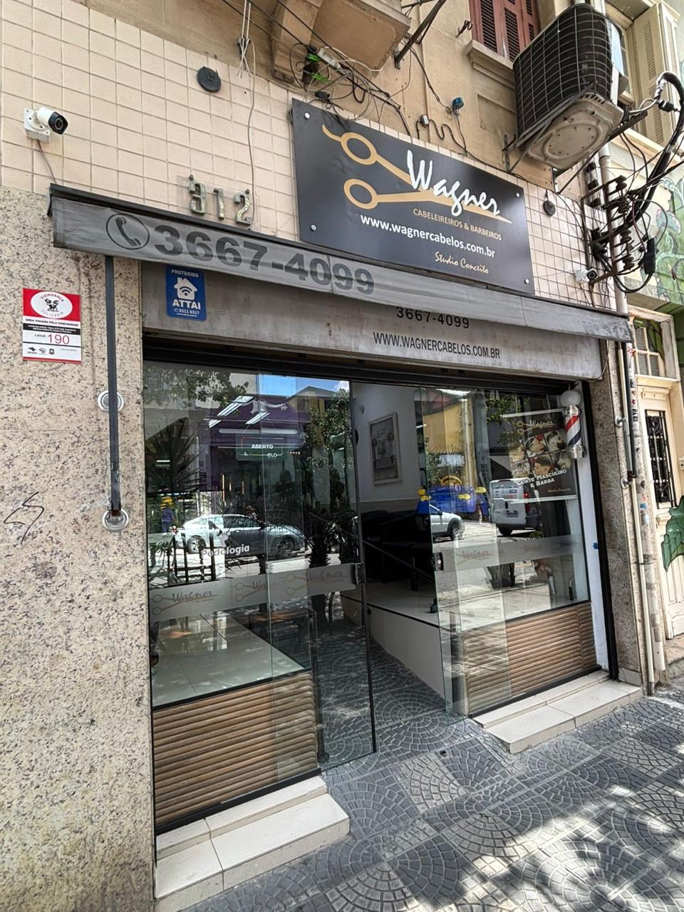

Desde 1987
Studio I - Santa Cecília
O primeiro Studio Wagner Cabeleireiros, no bairro Santa Cecília.
Conhecer o Studio →Desde 1987 — São Paulo
Studio Conceito
O Studio Wagner Cabeleireiros é único. Em nossos Studios você encontrará sempre a tendência do que existe de mais moderno e sofisticado no mundo Fashion Hair. O espaço é agradável, moderno e confortável e está sob coordenação de Wagner Coelho. O primeiro Studio foi aberto em 1987, no bairro Santa Cecília em São Paulo. Em junho de 1997, o Studio Wagner Cabeleireiros abriu mais um espaço, localizado no bairro de Casa Verde, oferecendo mais uma opção para seus clientes. Aqui você é a pessoa mais importante. Deixar nossos clientes realizados e satisfeitos é definitivamente a nossa missão.
Os produtos que usamos e recomendamos no dia a dia, disponíveis para compra em qualquer uma das unidades.
Fale com a gente pelo WhatsApp e marque seu horário em minutos.